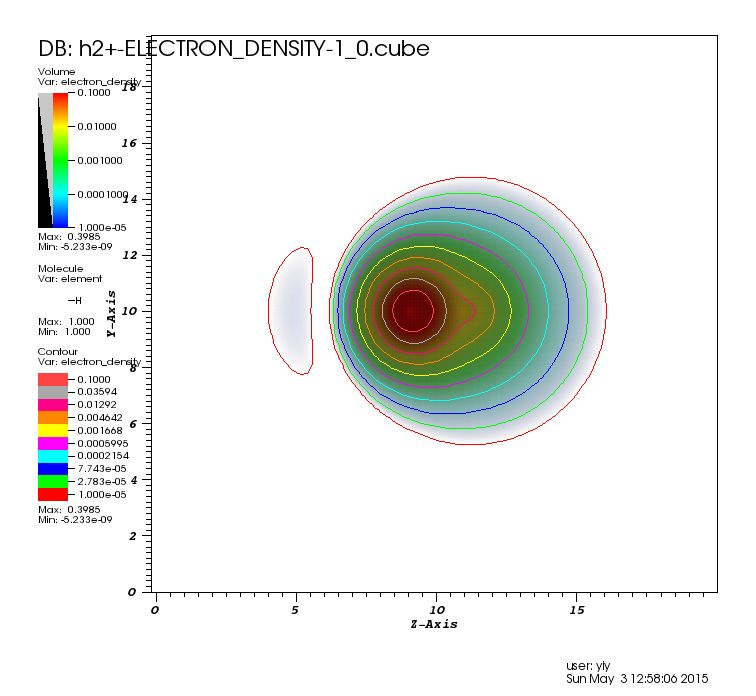

Constrained Density Functional Theory has many applications. Here I showed a simple example of cDFT of H2+ system. And I would like to constrain the electron on one proton with cp2k.
Here is the script.
&FORCE_EVAL
METHOD Quickstep
&DFT
BASIS_SET_FILE_NAME /global/homes/y/yyao_unc/software/cp2k/cp2k/cp2k/data/BASIS_MOLOPT
POTENTIAL_FILE_NAME /global/homes/y/yyao_unc/software/cp2k/cp2k/cp2k/data/GTH_POTENTIALS
CHARGE +1
&MGRID
CUTOFF 250
REL_CUTOFF 50
&END MGRID
&QS
METHOD GPW
&MULLIKEN_RESTRAINT
TARGET 1.0
STRENGTH 3000.0
ATOMS 1
&END
&END QS
&SCF
&OT ON
MINIMIZER DIIS
ENERGY_GAP 0.001
PRECONDITIONER FULL_ALL
&END OT
EPS_SCF 1.0E-6
SCF_GUESS ATOMIC
MAX_SCF 200000
&END SCF
UKS
&XC
&XC_FUNCTIONAL PBE
&END XC_FUNCTIONAL
&XC_GRID
XC_SMOOTH_RHO NN50
XC_DERIV NN50_SMOOTH
&END
&END XC
&PRINT
&E_DENSITY_CUBE
&EACH
MD 100
&END EACH
STRIDE 1 1 1
&END E_DENSITY_CUBE
&END PRINT
&END DFT
&SUBSYS
&CELL
ABC [bohr] 20.0 20.0 20.0
&END CELL
&COORD
H 10.0 10.0 9.0
H 10.0 10.0 11.0
UNIT bohr
&END COORD
&KIND H
BASIS_SET DZVP-MOLOPT-SR-GTH-q1
#BASIS_SET DZVP-GTH
POTENTIAL GTH-BLYP-q1
&END KIND
&END SUBSYS
&END FORCE_EVAL
&GLOBAL
PROJECT h2+
PRINT_LEVEL MEDIUM
&END GLOBAL
After the calculation the Mulliken Analysis is showed here.
MULLIKEN POPULATION ANALYSIS
# Atom Element Kind Atomic population (alpha,beta) Net charge Spin moment
1 H 1 0.999915 0.000000 0.000085 0.999915
2 H 1 0.000085 0.000000 0.999915 0.000085
# Total charge and spin 1.000000 0.000000 1.000000 1.000000
And I also visulized the charge density cube file. Most of the charge density is on the left proton now.
